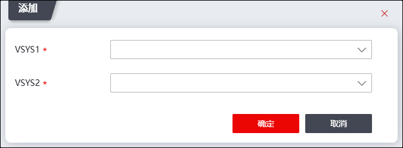

虚接口是虚拟系统自身与其他虚拟系统或根系统之间通信的接口，各个虚拟系统的虚拟接口和根系统的虚拟接口之间默认通过一条“虚拟链路”连接。如果将根系统和虚拟系统视为独立的设备，将虚拟接口视为设备之间通信的接口，那么将两个系统通过虚接口相连，就能实现虚拟系统与根系统以及其他虚拟系统之间的互访。
|
²不能在非路由模式的虚拟系统之间创建通信虚接口。关于虚拟系统工作模式的配置具体请参见 虚拟系统。 |

| 步骤1 | 选择 。 |
| 步骤2 | 点击『添加』，添加VSYS虚接口，界面如下图所示。 |

| 步骤3 | 分别在“VSYS1”和“VSYS2”参数下拉框中选择虚系统名称，点击【确定】按钮完成虚拟接口的添加。完成添加后，系统会出现两个虚接口，命名规则为veth_n1_n2与veth_n2_n1，分别从属于n1系统与n2系统（n1，n2为添加虚系统时NGFW自动为该虚系统按顺序赋予的ID号）。 |
| 步骤4 | 点击列表上方的“查看根系统”，可查看归属根系统虚接口；选中虚接口列表，点击“查看对应系统”，可查看归属该系统的虚接口；点击列表上方的“查看所有”，可查看所有虚接口。 |
|
²虚接口的添加和删除操作都需要成对进行。 |